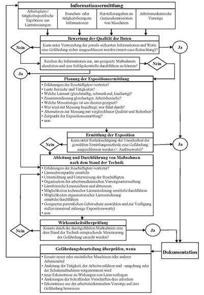

(1) Die Ermittlung und Beurteilung der Gefährdung, die Ableitung und Durchführung von Maßnahmen des Arbeitsschutzes sowie die Wirksamkeitsprüfung und Dokumentation ist im Überblick in Abbildung 2 dargestellt.
(2) Diese TRLV ermöglicht auch ein vereinfachtes Vorgehen bei der Gefährdungsbeurteilung. Dies ist der Fall, wenn
(3) Beim vereinfachten Verfahren der Gefährdungsbeurteilung im Sinne von Absatz 2, Spiegelstriche 3 bis 5, sind stets die höchsten ortsbezogenen Lärmpegel heranzuziehen, denen Beschäftigte ausgesetzt sein können.

Große Version anschauen
Abb. 2: Beurteilung der Arbeitsbedingungen bei Lärmexposition
(1) Bei der Beurteilung der Arbeitsbedingungen hat der Arbeitgeber zunächst festzustellen, ob die Beschäftigten Lärm ausgesetzt sind oder ausgesetzt sein können. Ist dies der Fall, hat er alle hiervon ausgehenden Gefährdungen für die Gesundheit und Sicherheit der Beschäftigten zu beurteilen.
(2) Die Gefährdungsbeurteilung umfasst bei Lärmexposition insbesondere:
| a) | Die Ermittlung von Art, Ausmaß und Dauer der Exposition durch Lärm. Die Ermittlung der typischen Lärmexposition setzt eine sorgfältige Arbeitsanalyse voraus. Vom Ergebnis der Arbeitsanalyse hängt ab, welche Ermittlungsstrategie sinnvollerweise anzuwenden ist, d. h. die Verwendung branchen- oder arbeitsmitteltypischer Lärmpegel oder die Messung der Lärmexposition. Je nach gewählter Ermittlungsstrategie ist ggf. ein größerer Aufwand für die Arbeitsanalyse oder für die Durchführung der Ermittlung erforderlich (TRLV Lärm, Teil 2 „Messung von Lärm“). |
| b) | Die Prüfung der Einhaltung der Auslösewerte und der maximal zulässigen Expositionswerte. |
| c) | Die Prüfung der Verfügbarkeit alternativer Arbeitsmittel und Ausrüstungen (TRLV Lärm, Teil 1 „Beurteilung der Gefährdung durch Lärm“, Abschnitt 4.3), die zu einer geringeren Exposition der Beschäftigten führen (Substitutionsprüfung). |
| d) | Die Einbeziehung von Erkenntnissen aus der arbeitsmedizinischen Vorsorge sowie von allgemein zugänglichen veröffentlichten Informationen hierzu. |
| e) | Die Beachtung der zeitlichen Ausdehnung der beruflichen Exposition über eine Acht-Stunden-Schicht oder eine 40-Stunden-Woche hinaus. |
| f) | Die Prüfung der Verfügbarkeit und Wirksamkeit von Gehörschutzmitteln (TRLV Lärm, Teil 3 „Lärmschutzmaßnahmen“, Abschnitt 6). |
| g) | Die Beachtung von Auswirkungen auf die Gesundheit und Sicherheit von Beschäftigten, die besonders gefährdeten Gruppen angehören. |
| h) | Die Berücksichtigung von Herstellerangaben zur Geräuschemission von Maschinen, Geräten und Anlagen. |
(3) Lässt sich die Einhaltung der unteren oder oberen Auslösewerte nicht sicher ermitteln, hat der Arbeitgeber das Ausmaß der Exposition durch Messungen festzustellen (TRLV Lärm, Teil 2 „Messung von Lärm“). Ansonsten ist von der Überschreitung der unteren bzw. oberen Auslösewerte auszugehen.
(4) Die Auslösewerte in Bezug auf den Tages-Lärmexpositionspegel und den Spitzenschalldruckpegel betragen:
Hinweis: Der obere Auslösewert von 85 dB(A) ist epidemiologisch abgeleitet worden unter der Voraussetzung, dass zur Gehörerholung eine lärmfreie Zeit von mindestens zehn Stunden zwischen den Arbeitsschichten mit einem Schalldruckpegel nicht größer als 70 dB(A) eingehalten wird.
(5) Bei der Anwendung der Auslösewerte wird die dämmende Wirkung eines persönlichen Gehörschutzes der Beschäftigten nicht berücksichtigt.
(6) Hinsichtlich des Spitzenschalldruckpegels ist im Rahmen der Gefährdungsbeurteilung der höchste für den Arbeitsplatz vorhersehbare Wert heranzuziehen.
(7) Entsprechend den Ergebnissen der Gefährdungsbeurteilung hat der Arbeitgeber Schutzmaßnahmen nach dem Stand der Technik festzulegen (s. TRLV Lärm, Teil 3 „Lärmschutzmaßnahmen“).
(8) Wird einer der unteren Auslösewerte trotz Durchführung der Maßnahmen nach TRLV Lärm, Teil 3 „Lärmschutzmaßnahmen“ überschritten, hat der Arbeitgeber den Beschäftigten einen geeigneten persönlichen Gehörschutz zur Verfügung zu stellen, durch dessen Anwendung die Gefährdung des Gehörs beseitigt oder auf ein Minimum verringert wird.
(9) Wird einer der oberen Auslösewerte trotz Durchführung der Maßnahmen nach TRLV Lärm, Teil 3 „Lärmschutzmaßnahmen“ erreicht oder überschritten, hat der Arbeitgeber sicherzustellen, dass der angebotene Gehörschutz von den Beschäftigten sachgerecht verwendet wird. Dabei hat der Arbeitgeber sicherzustellen, dass der auf das Gehör der Beschäftigten einwirkende Lärm die maximal zulässigen Expositionswerte von 85 dB(A) bzw. 137 dB(C) nicht überschreitet. Die Verpflichtung, den angebotenen Gehörschutz zu verwenden, ergibt sich für die Beschäftigten aus § 15 Absatz 2 des Arbeitsschutzgesetzes.
(10) Ein Verfahren zur Prüfung auf Einhaltung der maximal zulässigen Expositionswerte durch Auswahl geeigneten Gehörschutzes wird in TRLV Lärm, Teil 3 „Lärmschutzmaßnahmen“, Abschnitt 6 beschrieben.
(11) Aufgrund der Ergebnisse der arbeitsmedizinischen Vorsorge kann es sich als notwendig erweisen, die Gefährdungsbeurteilung und die Überprüfung der Wirksamkeit der Schutzmaßnahmen zu wiederholen.
(12) Es ist zu berücksichtigen, dass während einer Tätigkeit genutzte zusätzliche Schallquellen wie Tonwiedergabegeräte (z. B. MP3-Player, Radiogeräte) zu einer Gehörgefährdung oder Gefährdung der Sicherheit führen können. Dies ist bei der Auswahl von Maßnahmen nach TRLV Lärm, Teil 3 „Lärmschutzmaßnahmen“ zu beachten.
Gegenstand der Gefährdungsbeurteilung ist, mögliche Gefährdungen der Gesundheit und der Sicherheit von Beschäftigten durch Lärm frühzeitig zu ermitteln. Durch die Verwendung von Geräuschemissionsangaben der Maschinenhersteller oder von Vergleichsdaten der Lärmimmission ähnlicher Arbeitsplätze in der Branche ist dies unter bestimmten Umständen möglich, ohne Messungen durchzuführen.
(1) Die Geräuschemission, d. h. die Schallerzeugung von Maschinen, ist in den meisten Fällen Grund für die hohe Geräuschbelastung an den Arbeitsplätzen in der industriellen Fertigung. Daher sind nach der EG-Maschinenrichtlinie (2006/42/EG) bzw. der 9. ProdSV die Hersteller u. a. verpflichtet, sowohl in der Betriebsanleitung als auch in den Verkaufsprospekten, sofern in diesen Prospekten die Leistungsmerkmale der Maschinen beschrieben werden, folgende Geräuschemissionsangaben anzugeben:
Die mit diesen Angaben verbundenen Messunsicherheiten, die verwendeten Messnormen und die bei der Messung eingestellten Betriebsbedingungen sind ebenfalls anzugeben.
(2) Zusätzlich zu den Anforderungen der 9. ProdSV sind Geräte und Maschinen, die zur Verwendung im Freien vorgesehen sind und der Geräte- und Maschinenlärmschutz-Verordnung (32. BImSchV) unterfallen, sichtbar, lesbar und dauerhaft haltbar am Gerät bzw. der Maschine mit der Angabe des garantierten Schallleistungspegels zu kennzeichnen. Beim garantierten Schallleistungspegel handelt es sich um die Summe aus gemessenen Schallleistungspegel und der entsprechenden Messunsicherheit.
(3) Auf der Basis dieser Geräuschemissionswerte können sowohl im Vergleich besonders leise Maschinen beschafft als auch die Geräuschimmission an den Arbeitsplätzen abgeschätzt werden.
(4) Um sicherzustellen, dass die Emissionswerte nicht mit den in der LärmVibrationsArbSchV genannten schalltechnischen Kenngrößen verwechselt werden, ist es notwendig, die Bedeutung der relevanten Schallpegel genau zu kennen, da das in der Akustik verwendete Dezibel (dB) für die Beschreibung von physikalisch völlig unterschiedlichen Größen verwendet wird. Geräuschemissionsangaben, die andere Schallkenngrößen als den Emissionsschalldruckpegel oder den Schallleistungspegel verwenden, oder Angaben ohne Normenbezug sind für eine Gefährdungsbeurteilung nur bedingt oder gar nicht heranzuziehen.
(5) Die Verwendung von Geräuschemissionswerten zur Ermittlung von Lärmimmissionspegeln zur Abschätzung einer potentiellen Gefährdung durch Lärm erfordert im Allgemeinen besondere Fachkunde und eine dem Stand der Technik entsprechende Schallprognosesoftware. Dabei wird im Grundsatz davon ausgegangen, dass beim Betrieb einer Maschine pro Sekunde Schallenergie, d. h. Schallleistung, erzeugt wird, die sich im Raum ausbreitet, absorbiert und reflektiert wird. Neben der Schallleistung der betrachteten Maschine gehen in das Berechnungsverfahren noch die Schallleistungen weiterer Maschinen im Aufstellungsraum, die Position der Schallquellen, die Abmessungen des Raums und raumakustische Parameter wie die Nachhallzeit, die Absorptionsfläche etc. ein.
(6) Unter bestimmten – in Anlage 3 dargestellten – Bedingungen ist es möglich, auf der Grundlage des Emissionsschalldruckpegels den Lärmimmissionspegel und letztlich den Tages-Lärmexpositionspegel am betrachteten Arbeitsplatz, insbesondere in der Nähe von Maschinen, mit hinreichender Sicherheit abzuschätzen.
Eine Beurteilung der Gefährdung durch Lärm lässt sich auch auf der Basis existierender branchenspezifischer Vergleichsdaten für typische Arbeitsvorgänge oder Arbeitsplätze an Maschinen bzw. in bestimmten Produktionsbereichen durchführen. Solche Daten können im Allgemeinen bei den Unfallversicherungsträgern, bei Messstellen oder auch bei Arbeitsschutzbehörden nachgefragt werden. Sie bilden bei Vorliegen einer vergleichbaren Arbeitssituation in der jeweiligen Branche eine gute Annäherung an die durch direkte Messung ermittelten Lärmimmissionswerte.
(1) Bei der Gefährdungsbeurteilung sind auch mittelbare Auswirkungen auf die Gesundheit und Sicherheit der Beschäftigten zu berücksichtigen, z. B. durch Wechselwirkungen zwischen Lärm und Gefahrensignalen oder anderen Geräuschen, deren Wahrnehmung zur Vermeidung von Gefährdungen erforderlich ist.
(2) Wird durch Lärm die Wahrnehmung akustischer Signale, Warnrufe oder gefahrankündigender Geräusche beeinträchtigt und entsteht hierdurch eine erhöhte Unfallgefahr, muss der Arbeitgeber geeignete Maßnahmen ergreifen, um die Signalerkennbarkeit zu verbessern (siehe TRLV Lärm, Teil 3 „Lärmschutzmaßnahmen“, Abschnitt 4.8).
(3) Insbesondere ist auch darauf zu achten, dass die Benutzung von Tonwiedergabegeräten ohne oder mit Ohr- oder Kopfhörer (z. B. MP3-Player, Radiogeräte) nicht zu einer Beeinträchtigung der Wahrnehmung von Gefahrensignalen und gefahrankündigenden Geräuschen führen.
(1) Bei der Gefährdungsbeurteilung sind mögliche Wechsel- oder Kombinationswirkungen bei gleichzeitiger Belastung durch Lärm und arbeitsbedingte ototoxische Substanzen zu berücksichtigen.
(2) Für die beruflichen Expositionen bedeutende Stoffe mit ototoxischem Potenzial sind beispielsweise:
1 Neurotoxische organische Lösungsmittel gemäß Liste zur Berufskrankheit BK 1317
Hinweis: Eine von den Unfallversicherungsträgern fortgeschriebene Liste von für berufliche Expositionen bedeutenden Stoffen mit ototoxischem Potential ist unter www.DGUV.de mit webcode d113326 zu finden.
(3) Bisher liegen keine gesicherten Erkenntnisse zu Dosis-Wirkungs-Beziehungen beim Menschen vor. Ein wesentlicher, durch arbeitsbedingte ototoxische Substanzen verursachter Hörverlust ist bei Einhaltung der derzeit gültigen Grenzwerte für arbeitsbedingte ototoxische Substanzen wenig wahrscheinlich.
(4) Von einigen Medikamenten, z. B. manchen Antibiotika, Zytostatika, Diuretika, Chinin, Salicylate, Protonenpumpeninhibitoren, GHB (Gammahydroxybutyrat) sind ototoxische Wirkungen bekannt.
(1) Bei der Gefährdungsbeurteilung sind mögliche Wechsel- oder Kombinationswirkungen bei gleichzeitiger Belastung durch Lärm und Vibrationen zu berücksichtigen.
(2) Wissenschaftliche Untersuchungen zeigen, dass es sowohl bei Hand-Arm-Vibrationen als auch bei Ganzkörper-Vibrationen durch gleichzeitig einwirkenden Lärm zu Wechselwirkungen im Sinne einer – gegenüber fehlender Vibrationsexposition – Verstärkung der Gefährdung des Gehörs kommen kann. Allerdings gibt es für diese Wechselwirkungen derzeit noch keine präzisen Dosis-Wirkungs-Beziehungen.
(3) Eine Gefährdung durch Wechsel- oder Kombinationswirkungen bei gleichzeitiger Belastung durch Lärm und Vibrationen ist bei Einhaltung der Auslösewerte für Vibrationen wenig wahrscheinlich.
(1) Die Gefährdungsbeurteilung umfasst bei Lärmexposition auch die Auswirkungen auf die Gesundheit und Sicherheit von Beschäftigten, die besonders gefährdeten Personengruppen angehören.
(2) Dazu gehören insbesondere Personen mit eingeschränkter Belastbarkeit, wie
und
Nach den Vorschriften zum Mutterschutz genießen Schwangere und stillende Mütter einen besonderen Schutz. Die Forderungen aus dem Mutterschutzgesetz (MuSchG) sind hinsichtlich des Schutzes Schwangerer vor gesundheitsschädigendem Lärm vom Arbeitgeber zu beachten. Bei Gefährdungen durch Lärm sind geeignete Maßnahmen zu ergreifen.
Nach § 22 Absatz 1 Nummer 5 JArbSchG besteht ein Beschäftigungsverbot für Jugendliche für Arbeiten, bei denen sie schädlichen Einwirkungen von Lärm ausgesetzt sind. Allerdings gilt dies nicht bei Jugendlichen über 16 Jahren für Arbeiten, die zur Erreichung ihres Ausbildungsziels erforderlich sind und bei denen der Schutz der Jugendlichen durch die Aufsicht von Fachkundigen gewährleistet ist (§ 22 Absatz 2 JArbSchG). Die Aufsicht soll gefährdende Expositionsumstände, z. B. durch vermeidbare Lärmeinwirkungen oder unzureichenden Schutz des Gehörs, vermeiden helfen.
Bei Beschäftigten mit Vorerkrankungen des Innenohres muss jeweils der Einzelfall betrachtet werden. Auch darf ein bereits geschädigtes Innenohr nicht weiter durch Lärm belastet werden, um eine Verschlimmerung zu vermeiden. Die Beratung durch den Betriebsarzt erfolgt in der Regel im Rahmen der arbeitsmedizinischen Vorsorge. Arbeitgeber müssen berücksichtigen, dass die Beschäftigten nicht in allen Fällen verpflichtet sind, ihre Vorerkrankungen offen zu legen.
Aufgrund ihrer geringen Berufserfahrung zählen Auszubildende, andere Berufsanfänger und Praktikanten zu den besonders gefährdeten Personengruppen. Art, Ausmaß und Dauer der Lärmexposition hängen auch von den Kenntnissen, Fähigkeiten und Fertigkeiten der Beschäftigten ab. Der Umgang mit Arbeitsmaschinen erfordert Erfahrung, um sie lärmarm zu betreiben und die Verursachung von Lärmexpositionen für sie selbst und für Dritte möglichst gering zu halten.
Leiharbeitnehmer sind zu Beginn ihrer Tätigkeit Neulinge im Betrieb. Betriebsabläufe und besondere Gefährdungssituationen sind ihnen noch nicht umfassend bekannt. In den Unterweisungen und bei der Aufgabenübertragung ist deshalb besonders darauf zu achten, dass ihnen alle notwendigen Informationen über die Gefährdung durch Lärm sowie zu den betrieblichen Lärmschutzmaßnahmen bekannt gemacht werden.
Generell hat der Arbeitgeber bei der Übertragung von Aufgaben auf Beschäftigte sowohl deren Befähigung für die Einhaltung der Bestimmungen zu Sicherheit und Gesundheitsschutz zu berücksichtigen (§ 7 ArbSchG) als auch deren individuellen Gesundheitsschutz sicherzustellen (§§ 3 und 4 ArbSchG).
{kind=link}